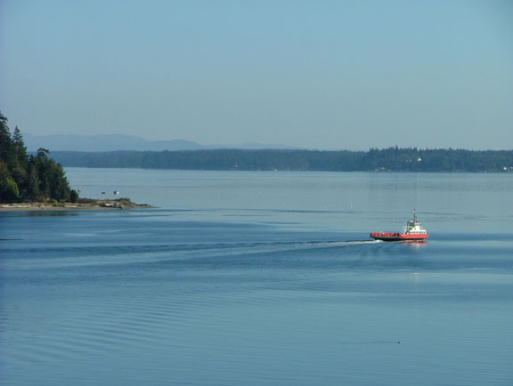

Photos
|
(9/17/06)
- The ferry returned to service on Saturday.
|
|
(9/15/06)
- Captain John says, “Unless some unforeseen problem arises the ferry will be running on schedule Saturday, September 16th, departing the island at 230 pm.”
|
|
(9/14/06)
- The cabin is ready to be painted.
- The engine room was painted.
- The bottom of the boat was painted.
- The deck ends are ready to be painted.
- The propeller shafts were returned and installed.
- Captain John says, “Check the website tomorrow for an update of when the ferry will return.”
|
|
(9/13/06)
- Removal of the old paint from the cabin continues.
- The engine room was prepped for painting.
- The bottom of the boat was prepped for painting.
- Prepping of the deck ends continues.
- The value and condition survey was completed.
- The Coast Guard inspection was completed.
- Captain John reports, “There have been no holdups, nothing unexpected has come up and all is going as planned.”
|
|
(9/12/06)
- Removal of the old paint from the cabin continues.
- The engine room bilge was cleaned.
- The bottom of the boat below the water line was washed in preparation for painting.
- Both propeller shafts were removed and sent to the machine shop.
- Both fuel tanks have been cleaned and resealed.
- Both deck ends are being prepped for painting.
- All fire extinguishers have been serviced.
- The value and condition survey was started today.
- The Coast Guard inspection is scheduled for tomorrow.
|
|
|
(9/11/06 pm) - One of the propeller shafts was removed today with the other scheduled to be removed tomorrow. The first fuel tank was cleaned and the second is scheduled for cleaning Tuesday. Old paint is being removed from the cabin.
(9/11/06 am) - The ferry departed on time Sunday with Captain John and Donnie. The water was like glass and they couldn't have had a more beautiful night. They passed under the Narrows bridge at 8:30 pm and arrived at the Tacoma dock at 10:30 pm. John and Donnie slept on cots in the cabin overnight and moved the ferry into dry dock Monday at 7 am. We will publish progress reports and pictures in this space as often as possible during the dry dock period.
|